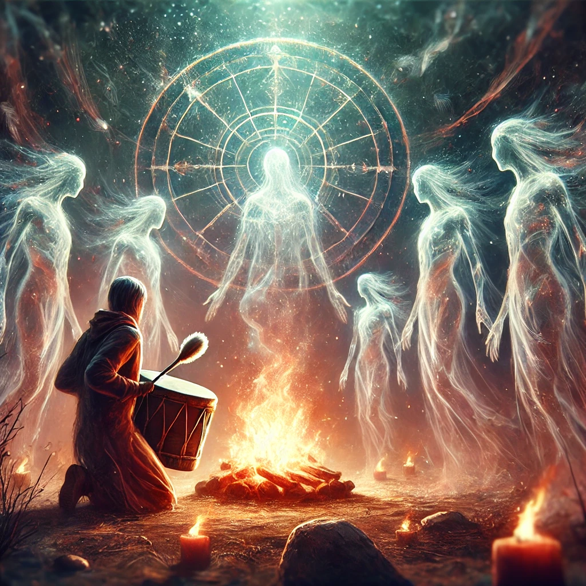

The spirits encircle you, their translucent forms glowing faintly in the light of the ceremonial fire. Their chants grow louder, harmonizing with the rhythm of the drum you hold. Each beat sends ripples of energy through the clearing, connecting you to something far greater than yourself.
One spirit steps forward, their face familiar yet timeless. “You walk a path many have walked before you,” they say, their voice echoing with the wisdom of generations. “We carry the stories of the earth and the stars, and now, we pass them to you. What will you seek from us?”
“The Medicine Wheel turns,” another spirit whispers. “Its cycles guide all who listen. To walk the path of wisdom is to honor its balance.”

What will you ask the spirits?